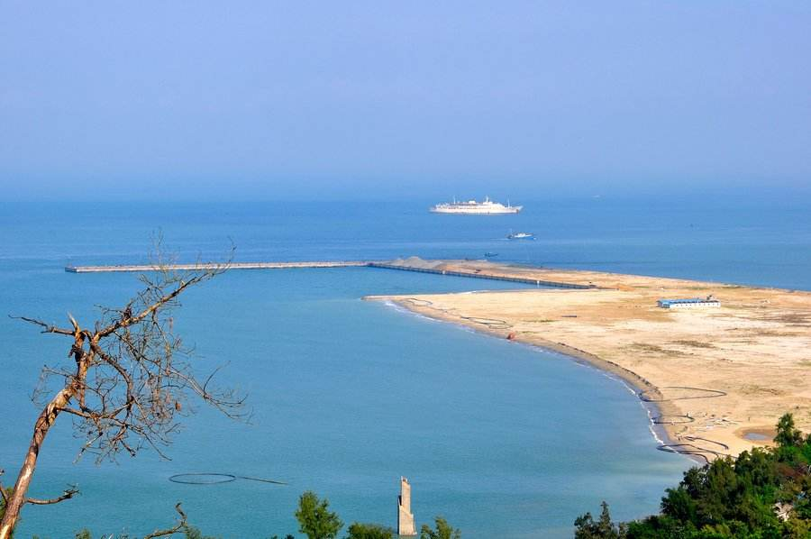

北海简介
北海，是广西壮族自治区地级市，地处广西壮族自治区南端，北部湾东北岸。西北距首府南宁206公里，东距广东湛江198公里，东南距海南海口市147海里。地势总体呈北高南低，地形平坦开阔；气候属海洋性季风气候，具有典型的亚热带特色；下辖3个区、1个县，总面积3337平方千米；2017年总人口175.42万人。
北海是古代“海上丝绸之路”的重要始发港，是国家历史文化名城、广西北部湾经济区重要组成城市。北海区位优势突出，地处华南经济圈、西南经济圈和东盟经济圈的结合部，处于泛北部湾经济合作区域结合部的中心位置，是中国西部地区唯一列入全国首批14个进一步对外开放的沿海城市，也是中国西部唯一同时拥有深水海港、全天候机场、高速铁路和高速公路的城市。
2017年，北海市完成地区生产总值1229.84亿元，按可比价计算，较上年增长10.2%。其中，第一产业实现增加值190.54亿元，增长3.7%；第二产业实现增加值668.66亿元，增长10.5%；第三产业实现增加值370.64亿元，增长13.3%。三次产业的结构比例为15.5：54.4：30.1，对经济增长的贡献率分别为6.2%、52.5%、41.3%，人均地区生产总值74378元。 [2] 2018年11月，入选中国城市全面小康指数前100名。
广西北海市的“北海”一名来自其海城区地角镇的同名渔村“北海村”，由于此地最早开发人群都是疍家渔民，他们长年集中居住在靠近避风港的村落，该避风港面向北面海域（北海市是个半岛），所以此村得名“北海村”。 “朝沧梧而夕北海”，北海的名字很早就有了，北海地名的形成，定位于康熙元年（1662年），清政府设“北海镇标”作为“北海”地名的称谓。由于此种说法转述频繁、引证广泛，因此成为一个定例。据文史资料记载，“北海”一词可追溯至宋朝甚至是魏晋南北朝时期，这个时期，“北海”更多的是被外国人所称呼。1965年6月，北海由广东省划归广西壮族自治区，北海之名也一直沿用至今。

北海市境内大陆部分是一个呈犀牛角形的半岛，地势总体呈北高南低，地形平坦开阔，海拔一般较低，属滨海平原；海岛部分地势南高北低，海拔一般比大陆部分稍高，属火山岩台地。滨海平原为大陆区的主要地貌单元，地势平坦，总的趋势由北向南微倾斜，地表略有起伏，南部起伏甚小，北部起伏略大，组成物质为第四纪的粘土质砂、砂质粘土和砾砂等松散沉积物；属以冲积为主的滨海平原。其上零星散布着基岩孤立残丘，发育数条小河流、小溪，沿海岸发育海成地貌，西北部为海蚀地貌，南部为海积地貌。海岸地貌分布于大陆区、涠洲岛、斜阳岛沿岸，分为海蚀地貌和海积地貌两类型。